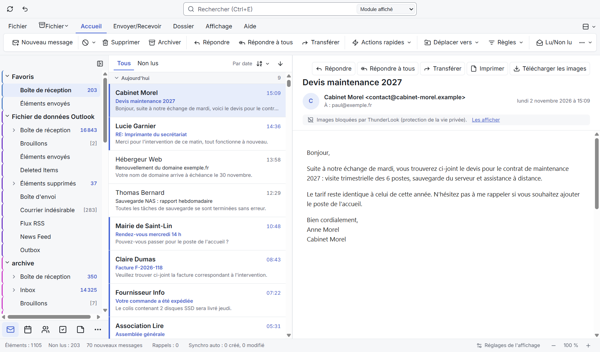
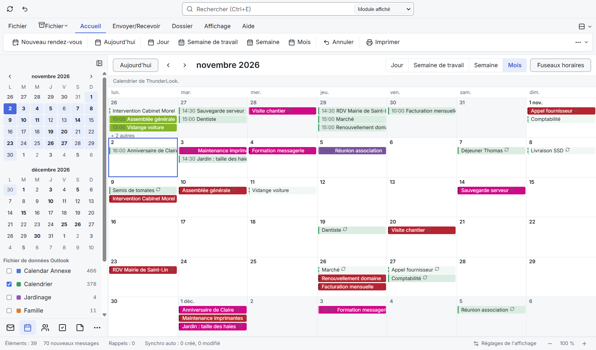
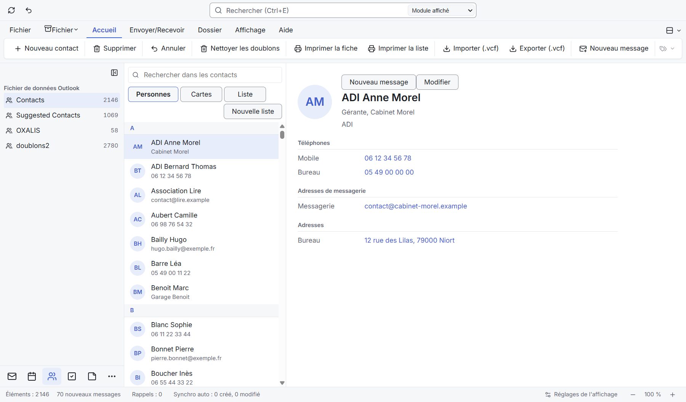

01OBJECTIF DE L'OUTIL
Remplacer Outlook 2021 par un clone autonome : courrier, calendrier, contacts, tâches et notes, 100 % local, sans compte Microsoft, avec la même ergonomie, et synchronisé avec les téléphones par MyPhoneExplorer.
Les PST ne sont lus que sur copie, jamais modifiés. Aucune donnée réelle dans le dépôt. Le S23 reste sur Outlook tant que ThunderLook n'est pas la référence ; les essais se font sur le S20.
02PLAN D'ACTION
- Import PST et lecture 19/10
217 257 éléments (15 Go) en 170 s, 0 perte ; dossier de 22 000 mails ouvert en 145 ms
- Recherche, rédaction, règles 20/10
Index plein texte sous 300 ms, réponses identiques à Outlook, 60 règles rejouées
- Comptes IMAP et SMTP 21/10
Relève, envoi, IDLE, hors connexion ; mots de passe dans Windows
- Calendrier et contacts 23/10
4 198 rendez-vous, occurrences identiques à Outlook ; 10 649 contacts
- Synchro téléphone et Outlook EN COURS
S20 dans les deux sens écrit et testé sur copie ; alignement Outlook sans doublon
- Remplacer Outlook À VENIR
Usage quotidien, bascule du S23, lien avec ADI Facturation



03ÉTAT D'AVANCEMENT
252 846éléments importés
59 462lignes de Rust
373tests automatiques
284commits en 16 jours
0,3 srecherche maximale sur 217 000 mails
42conflits S20 à trancher